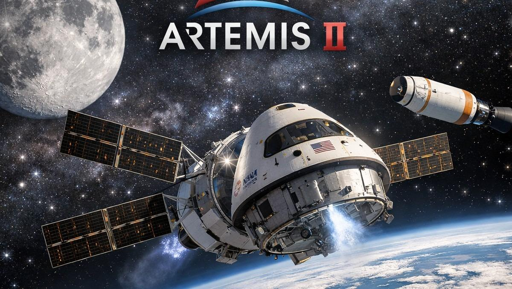
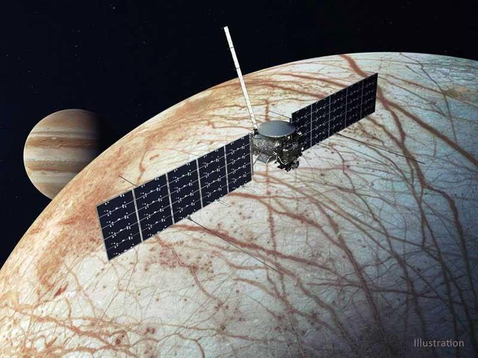
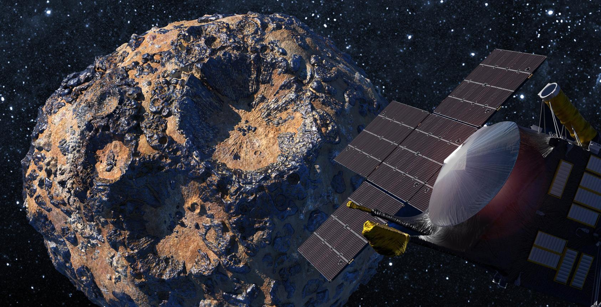
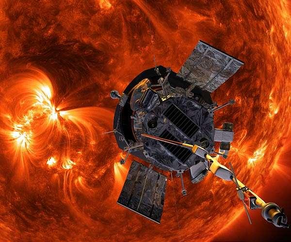
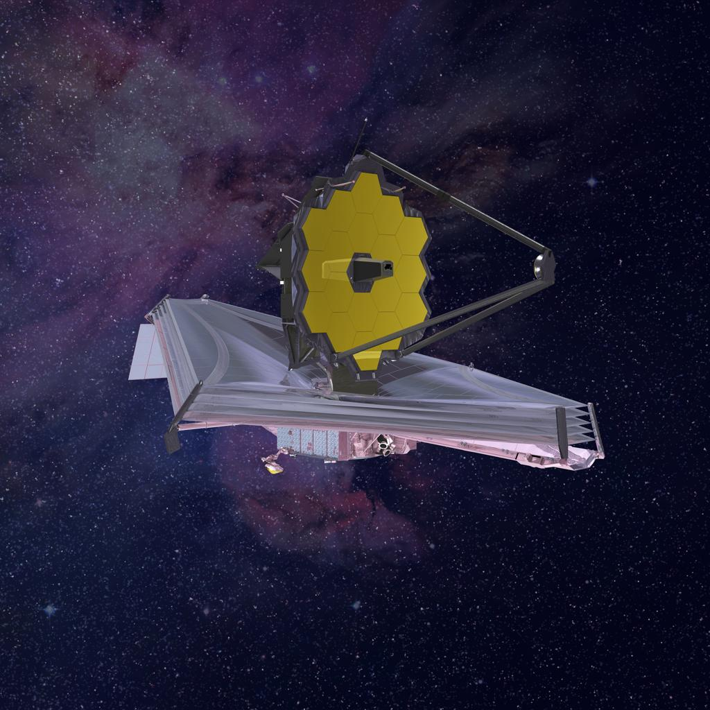
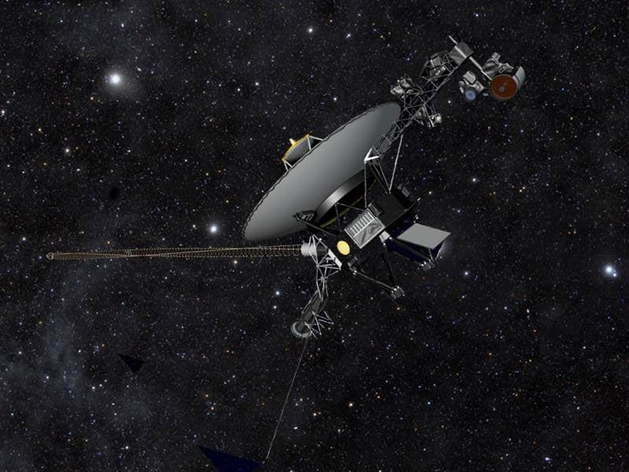

LATEST MISSIONS
Featured Missions
Explore our current and upcoming space missions, from Mars explorations to deep space research and beyond.

Artemis II
A crewed journey around the Moon that tested systems needed for future human exploration.
View details
Europa Clipper
Investigates whether Jupiter's icy moon Europa has conditions that could support life. Arrival is planned for 2030.
View details
Psyche
Travels to a metal-rich asteroid between Mars and Jupiter to investigate its composition and how planets formed.
View details
Parker Solar Probe
Studies the Sun's outer atmosphere and solar wind, helping scientists understand our star and space weather.
View details
James Webb Space Telescope
Observes distant galaxies, stars, exoplanets, and the early universe using infrared astronomy.
View details
Voyager 1
Explores the space beyond the Sun's heliosphere, spacecraft has explored in the same way.
View details